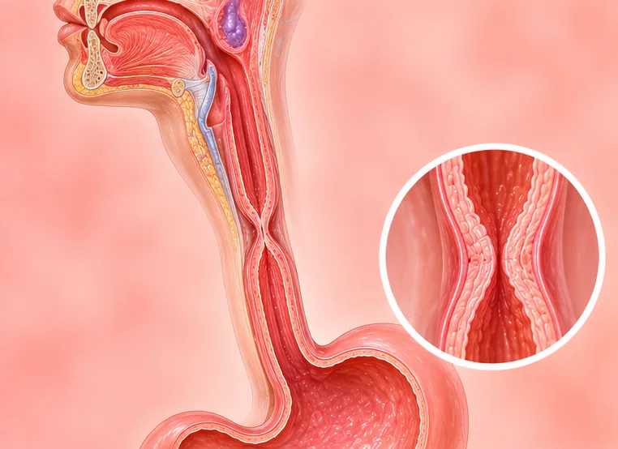

Esofagitis (radang kerongkongan)
Iritasi dan peradangan pada lapisan kerongkongan
Apa itu
Lapisan kerongkongan (esofagus) menjadi merah dan perih. Sering menyebabkan rasa terbakar di dada (heartburn) dan nyeri saat menelan.
- Kerongkongan, dari dada hingga perut atas
- Umum pada orang dewasa
- Rasa terbakar di dada, nyeri menelan
- Dokter yang dituju
- Dokter umum, atau dokter spesialis pencernaan (gastroenterolog)
- Sering pada
- Orang dewasa dengan refluks; orang yang merokok atau minum alkohol
- Menular
- Tidak
- Perjalanan
- Sering membaik bila penyebabnya ditangani; bisa kambuh
Tanda umum
Rasa terbakar di belakang tulang dadaUlu hati perih (refluks) 
Merasa mualMual 
Tidak nafsu makanHilang nafsu makan
Mengapa terjadi
Asam lambung naik dari perutRefluks asam lambung
Penyebab lain
- Alkohol, merokok, minuman yang sangat panas atau makanan pedas
- Beberapa pil yang mengiritasi lapisan kerongkongan
- Beberapa infeksi, alergi, atau sistem kekebalan tubuh yang lemah
Periksa ke dokter lebih dulu jika
- Nyeri dada disertai keringat, sulit bernapas atau nyeri menjalar ke lengan atau rahang: hubungi 119 atau 112
- Muntah darah, atau tinja hitam seperti aspal: segera ke rumah sakit
- Makanan tersangkut, atau Anda tidak bisa menelan
- Berat badan turun tanpa sebab, atau rasa terbakar di dada selama berminggu-minggu
Jika ada yang sesuai, silakan periksa ke dokter sebelum sesi.
Halaman ini berisi informasi umum. Tetap minum obat Anda seperti biasa dan tetap kontrol ke dokter.
Tetap minum obat Anda seperti biasa dan tetap kontrol ke dokter. Sesi kami adalah dukungan yang lembut dan tidak menggantikan perawatan medis.
Merawat diri

Makan dalam porsi kecil secara teraturMakan sedikit tapi sering
Cara lain merawat diri
- Tetap tegak beberapa saat setelah makan
- Kurangi alkohol, makanan berlemak atau pedas, dan berhenti merokok
- Minum pil dengan segelas penuh air, dan tanyakan kepada dokter atau apoteker tentang obat refluks
Beri tahu terapis Anda
- Masalah jantung
- Tekanan darah tinggi
- Kehamilan
- Obat pengencer darah
Terapis akan membahasnya bersama Anda sebelum mulai.
Tanya jawab
Apa itu Esofagitis (radang kerongkongan)?
Iritasi dan peradangan pada lapisan kerongkongan. Lapisan kerongkongan (esofagus) menjadi merah dan perih. Sering menyebabkan rasa terbakar di dada (heartburn) dan nyeri saat menelan.
Apa saja tanda umum Esofagitis (radang kerongkongan)?
Rasa terbakar di belakang tulang dada · Merasa mual · Tidak nafsu makan
Mengapa Esofagitis (radang kerongkongan) terjadi?
Asam lambung naik dari perut
Bagaimana merawat diri saat mengalami Esofagitis (radang kerongkongan)?
Makan dalam porsi kecil secara teratur
Apakah sesi AI Body Master bisa membantu Esofagitis (radang kerongkongan)?
Sesi ini adalah dukungan meridian yang lembut tanpa jarum untuk kebugaran Anda. Sesi ini bukan pengobatan untuk Esofagitis (radang kerongkongan) dan tidak menggantikan obat atau dokter Anda. Beri tahu terapis Anda sebelum sesi dimulai.
Kondisi terkait
Referensi: General information based on public health sources such as Mayo Clinic, NHS, Cleveland Clinic and NCBI StatPearls.
Halaman diperbarui: 2026-11-09